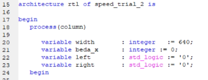
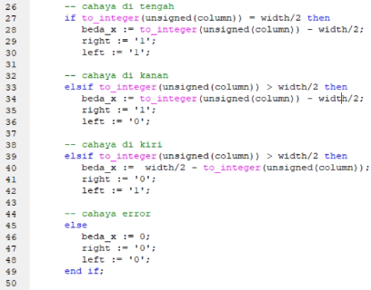
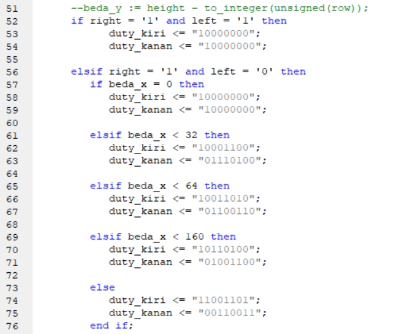
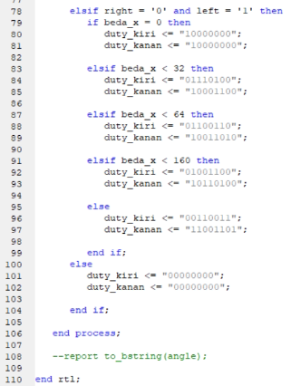
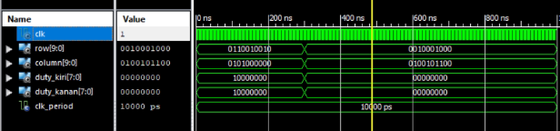

➤ Hasil dan Analisa
Percobaan Kedua
Disini kita lihat ada library dan entity. Entity yang dipakai disini adalah clk, row, column, duty_kiri, duty_kanan dimana clk dipakai untuk menerima clock Row dan column dipakai untuk mencari lokasi cahaya, duty_kiri dan duty_kanan merupakan output untuk mendeskripsikan kecepatan untuk roda kiri dan roda kanan.
Disini adalah architecture dari rangkaian ini dimana proses akan sensitive terhadap kolom. Di architecture ini terdapat variabel width, beda_x, left, right. Width merupakan lebar layer, beda_x adalah beda antara lokasi cahaya dengan tengah layer. Variabel left dan right dipakai untuk membuat truth table ke kiri dan ke kanan..
Disini merupakan potongan kode untuk menentukan arahnya. Bila kolom sama dengan tengah layer, maka left dan right dibuat satu menandakan maju. Bila ternyata column lebih besar daripada tengah layer, left dibuat menjadi 0 dan right menjadi 1. Begitu juga dengan sebaliknya. Bila column lebih kecil daripada tengah layer, left dibuat menjadi 1 dan right dibuat menjadi 0. Bila semua ini salah, maka akan dianggap sebagai error dan left dan right dibuat menjadi 0.
Potongan kode ini digunakan untuk menentukan kecepatan duty cycle roda kiri dan roda kanan. Bila arahnya ke kanan, maka bila beda_x lebih kecil dari 32, duty cycle kiri akan lebih besar sedikit daripada duty cycle kanan. Makin besar beda_x, makin besar juga perbedaan duty cycle kiri dengan kanan. Konsep ini sama dengan bila arahnya mau ke kiri, tinggal dibalik saja.
 Inilah hasil dari rangkaian ini. Tetapi program ini mengasumsikan bahwa cahaya yang akan diterima merupakan row dan column. Sedangkan pada kenyataannya nilai yang diterima untuk posisi cahaya adalah seperti yang ada pada percobaan pertama dan desain seperti ini termasuk high-level. Maka dari itu di percobaan ketiga akan disesuaikan dan akan dibuat lebih low-level.